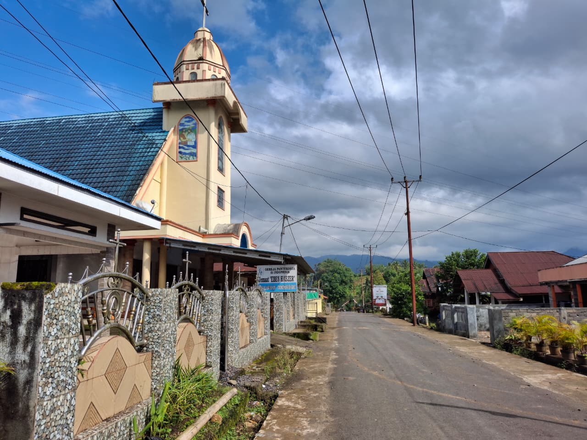

Sejarah
Sejarah Singkat
Sejarah Singkat
Desa Kinalawiran
Dari kampung Vooster hingga menjadi Kinalawiran, sebuah perjalanan panjang penuh semangat gotong royong dan ketahanan masyarakat.
1927
Berdirinya Pemukiman Awal
Sekitar 30 kepala keluarga dari Desa Eris, Tondano, yang seluruhnya beragama Kristen, membuka kampung baru di bawah pimpinan Tonaas Dewa Eduart Liogu dengan semangat gotong royong.
30 April 1930
Peresmian oleh Pemerintah Belanda
Pemerintah kolonial Belanda mengunjungi dan meresmikan kampung tersebut dengan nama, Vooster, berasal dari istilah Vooster Minasaart yang bermakna "terdepan" atau "bintang di bagian depan".
~1942
Masa Pendudukan Jepang
Pasukan Jepang membakar Vooster karena masyarakat menolak pemerintahan Jepang. Hukum Tua Jan R. Liogu mendapat mandat untuk berunding, dan masyarakat bersama-sama membangun kembali kampung mereka.
1942 – Kini
Lahirnya Nama Kinalawiran
Sebagai ungkapan syukur atas kesempatan membangun kembali kehidupan, nama kampung diganti menjadi Kinalawiran, yang berarti "umur panjang".

